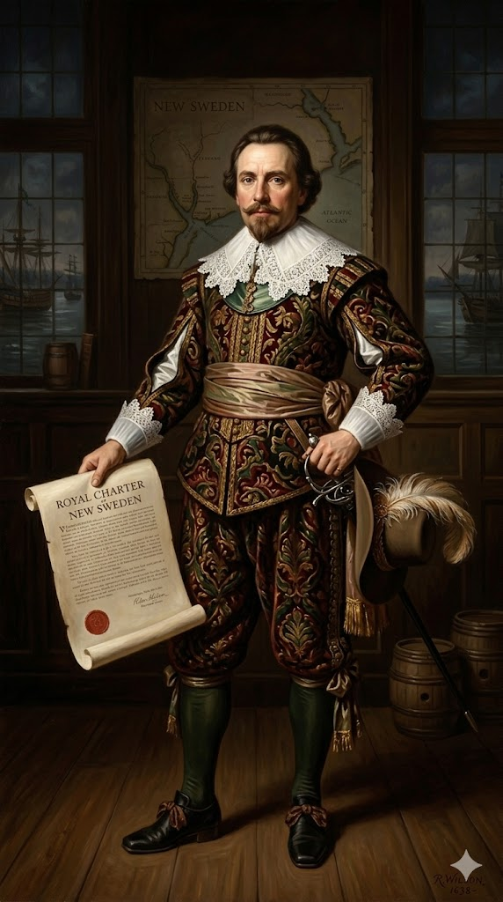
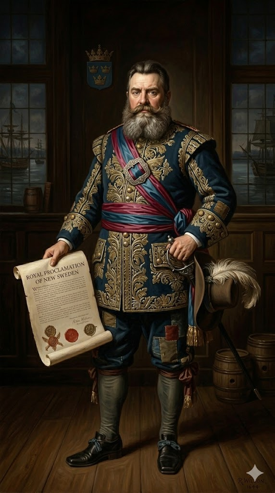
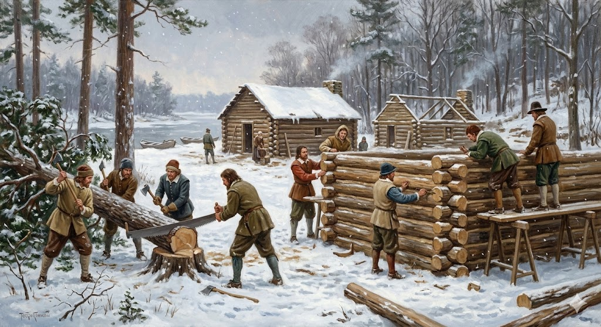

1. שנות פעילות, הקמה ויעדים
שנת הקמה: מרץ 1638. זוהי המושבה היחידה מבין ה-13 המקוריות שלא הוקמה במקור על ידי האנגלים או תחת חסותם.
ישות מקימה (מקורית): "החברה השוודית הדרומית" (Swedish South Company). בתקופה זו, האימפריה השוודית הייתה בשיא כוחה הצבאי והפוליטי באירופה תחת הנהגתו של המלך גוסטב אדולפוס הגדול, והיא חיפשה נואשות דריסת רגל כלכלית בעולם החדש כדי לממן את מלחמותיה.
היעדים המקוריים: היעד של הממלכה השוודית היה מסחרי ואסטרטגי לחלוטין. השוודים רצו לשבור את המונופול ההולך וגובר של האנגלים וההולנדים על סחר הפרוות הרווחי (בעיקר פרוות בונה ששימשו לכובעי יוקרה באירופה), ולייבא גידולי טבק מבלי לשלם מכסים למעצמות אחרות. המושבה תוכננה להיות תחנת סחר מבוצרת במעלה נהר הדלאוור, במיקום שיאפשר גישה ישירה ונוחה לשבטי האינדיאנים של פנים היבשת תוך עקיפת תחנות המכס ההולנדיות.
2. רקע המייסדים: המרגל והמושל הענק

פטר מינואי (Peter Minuit) (1580–1638)
ילדות ורקע: נולד בגרמניה למשפחה הולנדית-וואלונית (פרוטסטנטים צרפתים). מינואי היה סוחר ממולח, הרפתקן ויורד ים שעבד עבור "חברת הודו המערבית ההולנדית". הוא נכנס לספרי ההיסטוריה כאיש שקנה את האי מנהטן מהאינדיאנים תמורת חרוזים וסחורות, ושימש כמושל הראשון והמצליח של ניו יורק ההולנדית.
הבגידה והקמת דלאוור: למרות הצלחתו בניו יורק, ההולנדים פיטרו אותו בעקבות סכסוכים פוליטיים פנימיים. מינואי, פגוע וזועם, "ערק" והציע את שירותיו וידיעותיו העמוקות לממלכת שוודיה המתחרה. הוא ידע בדיוק היכן ההולנדים חלשים והיכן נמצאות נקודות התורפה במערך ההגנה שלהם. ב-1638, הוא הוביל משלחת של שתי ספינות שוודיות אל נהר הדלאוור הפנוי, רכש בערמומיות אדמה משבט הלנאפה המקומי, והקים את מבצר כריסטינה, ממש מתחת לאפם של ההולנדים. למרבה הטרגדיה, הוא מעולם לא זכה לראות את המושבה משגשגת, שכן הוא נהרג בסערה בים הקריבי שבועות ספורים לאחר מכן כשיצא לאסוף אספקת טבק.

יוהאן פרינץ (Johan Printz) (1592–1663)
המושל הגדול מכולם: פרינץ נשלח ב-1643 כדי לשמש כמושל האפקטיבי ביותר של "שוודיה החדשה". הוא היה איש צבא שוודי ותיק שלחם במלחמת שלושים השנים. אדם עצום ממדים, ששקל מעל ל-180 ק"ג, אימתני ובעל שפם עבות. האינדיאנים המקומיים, שמעולם לא ראו אדם במידות כאלו, העניקו לו ביראה את הכינוי "הבטן הגדולה" (Big Tub).
הישגים: פרינץ הפעיל משמעת צבאית נוקשה ושלט במושבה ביד רמה במשך 10 שנים רצופות. הוא בנה אחוזת פאר משלו, וחשוב מכך, הוא הקים מבצרים חדשים לאורך הנהר בנקודות חנק אסטרטגיות כדי לחסום לחלוטין את הגישה של ספינות הולנדיות לסחר הפרוות. הוא שמר על יחסי מסחר מצוינים וללא שפיכות דמים עם שבט הסוסקוואהאנוק העוצמתי, והביא את "שוודיה החדשה" לשיא כוחה. אולם, אופיו הרודני וחוסר הסבלנות שלו כלפי המתיישבים הדלים גרם לאנשיו שלו למרוד בו, והוא נאלץ לארוז את חפציו ולחזור לשוודיה ב-1653 בבושת פנים.
3. אידאולוגיה: מסחר, פרגמטיות ולא דת
בניגוד בולט למושבות ניו אינגלנד (כמו מסצ'וסטס או פלימות') שהוקמו מתוך להט דתי עמוק וכוונה לתקן את הכנסייה, בדלאוור האידאולוגיה הדתית הייתה שולית לחלוטין.
- פרגמטיזם כלכלי קיצוני: המניע המרכזי והיחיד של הממלכה השוודית היה מסחרי ואימפריאלי. השוודים הביאו איתם כמובן את הזרם הלותרני של הנצרות, ואף בנו את הכנסיות הלותרניות הראשונות והמרשימות ביותר באמריקה (חלקן עומדות עד היום), אך הם לא רדפו איש בגין אמונתו. ההולנדים והאנגלים שכבשו את האזור אחריהם חלקו בדיוק את אותו פרגמטיזם קר: כל עוד המתיישב סוחר הוגן, משלם את מיסיו ולא מורד – איש לא מתערב באמונתו או בשפתו.
- שלווה עם הילידים כאסטרטגיה: האידאולוגיה השוודית הורתה במפורש להימנע מנישול אינדיאנים בכוח הזרוע. הם האמינו שסחר הוגן, מתנות וכבוד הדדי יניבו הרבה יותר פרוות בונה מאשר מלחמות יקרות. כתוצאה ממדיניות רשמית זו, דלאוור נהנתה מעשורים נדירים של שלום יחסי עם שבטי הלנאפה.
4. גיאוגרפיה ובחירת המיקום: תפיסת עמק הנהר
מידע הידרולוגי: המושבה הוקמה לאורך מערכת נהר הדלאוור ומפרץ הדלאוור (אזור שמפריד כיום בין ניו ג'רזי, פנסילבניה, ומדינת דלאוור). מדובר באסטואר (שפך נהר) עצום, רחב ועמוק מאוד, המספק נתיב מים ישיר ובטוח אל לב היבשת. הנהר מושפע מאוד מגאות ושפל מהאוקיינוס האטלנטי, מה שאפשר גם לספינות סוחר גדולות במיוחד לנווט בו בקלות פנימה אל היבשה.
בחירת המיקום (עקיפת ההולנדים באלגנטיות): פטר מינואי השתמש בהיכרותו העמוקה עם המערך ההולנדי ובחר להקים את מבצר כריסטינה בנקודת המפגש של נהר ברנדיוויין ונהר כריסטינה הקטן יותר. בחירה גיאוגרפית זו הייתה גאונית ותוקפנית כאחד: היא העניקה לשוודים נמל מים עמוקים פרטי, וחשוב מכך – היא חסכה לאינדיאנים של האזור את הצורך לחתור קילומטרים רבים צפונה אל התחנות ההולנדיות. השוודים פשוט התיישבו ב"מורד הזרם", קרובים יותר לאוקיינוס, וכך "חתכו" את כל שרשרת האספקה ההולנדית ושדדו מהם את סוחרי הפרוות.
5. כלכלה והמצאת "בקתת העץ" האייקונית

כלכלת דלאוור שילבה סחר חוץ אינטנסיבי עם חדשנות טכנולוגית שהפכה לסמל התרבותי של ארצות הברית כולה:
- סחר הפרוות והטבק: בשנים הראשונות, הכלכלה נשענה כמעט לחלוטין על ייצוא עורות בונה שנרכשו מהשבטים, בתמורה לגרזנים וכלי נשק משוודיה. כאשר הסחר הזה דעך בהדרגה, השוודים, ולאחריהם האנגלים שניכסו את האדמה, עברו לגידול אינטנסיבי של טבק לאורך גדות הנהר הפוריות, בדומה למודל שהצליח כל כך בוירג'יניה ומרילנד.
- המצאת "בקתת העץ" (The Log Cabin): זוהי ללא ספק התרומה התרבותית הגדולה והמוכרת ביותר של המתיישבים השוודים, ובעיקר הפינים, למורשת האמריקאית. באנגליה בנו בתי עץ עם מסגרות מסובכות ומילוי אבן, אך הפינים, שהגיעו מאזורי יערות קפואים בצפון אירופה, הביאו את טכניקת ה"לוג קבין": שימוש בגזעי עצים שלמים ועגולים, המונחים אופקית זה על זה, עם חריצים שלובים בקצוות (Notched corners). טכניקה חכמה זו דרשה רק אדם אחד עם גרזן, לא הצריכה מסמרים כלל, והבטיחה בידוד מושלם לקור האמריקאי המקפיא. מהר מאוד, בקתת העץ הפכה למודל המגורים האולטימטיבי והמוכר ביותר של כל חלוצי המערב הפרוע.
6. דמוגרפיה: דלילות וכור היתוך הישרדותי
הדמוגרפיה של דלאוור הייתה מזערית במספרה, אך המגוונת והקוסמופוליטית ביותר מכל המושבות במאה ה-17:
- אוכלוסייה מעורבת: מכיוון שהמושבה הקטנה הזו החליפה ידיים מספר פעמים לאורך עשורים ספורים, אוכלוסייתה הורכבה מפסיפס לשוני חסר תקדים: שוודים, פינים (שנחשבו אז לנתיני האימפריה השוודית), הולנדים שנשארו, אנגלים שפלשו מאוחר יותר, ואף מספר עבדים שהובאו מאפריקה.
- מיעוט קבוע: לאורך כל תקופת המאה ה-17, דלאוור נותרה המושבה הדלילה והקטנה ביותר בצפון אמריקה (מנתה פחות מ-1,000 תושבים אירופאים בעשורים הראשונים להקמתה). הממשל השוודי במולדת התקשה מאוד לשכנע אזרחים חופשיים להגר ליבשת החדשה, ולעיתים קרובות נאלץ להשתמש בכפייה ולשלוח בספינות חיילים עריקים, פושעים זעירים, או אזרחים פינים שפלשו ליערות המלך, רק כדי לאכלס ולשמור על המבצרים שהקים.
7. מאבקי השליטה: כיבושים אימפריאליים ללא הפסקה
דלאוור הייתה חלקת האדמה המסחרית הנחשקת ביותר בחוף המזרחי, ועברה מיד ליד במאבקים אימפריאליים סוערים בתוך פחות מ-30 שנה:
א. ההשתלטות והנקמה ההולנדית (1655)
- מועד: סוף אוגוסט 1655.
- אישים בולטים: פטר סטויווסאנט (Peter Stuyvesant) - המושל הכללי הקשוח וקצר הרוח של ניו יורק ההולנדית.
- סיבת ההשתלטות ומהלכה: ההולנדים בניו יורק תמיד ראו בעמק הדלאוור כשטח הולנדי חוקי ושייך להם. כאשר השוודים העזו לתקוף ולכבוש עמדת מסחר הולנדית קטנה על הנהר, סטויווסאנט רתח מזעם על החוצפה. המטרה שלו הייתה למחוץ את התחרות השוודית. הוא הגיע אישית אל נהר הדלאוור עם צי מאיים של 7 ספינות מלחמה חמושות היטב וכ-300 חיילים. מול כוח שוודי זעיר ומפוחד שהתבצר במבצר כריסטינה, השוודים הבינו שאין להם שום סיכוי. הם נכנעו בתוך מספר ימים ללא שפיכות דמים מיותרת. כך נמחק שמה של "שוודיה החדשה" מהמפה, והמושבה עברה לידיים הולנדיות למשך עשור.
ב. ההשתלטות האנגלית הסופית (1664)
- מועד: ספטמבר-אוקטובר 1664.
- אישים בולטים: הקצין האנגלי סר רוברט קאר (Sir Robert Carr).
- סיבת ההשתלטות ומהלכה: אנגליה, תחת המלך צ'ארלס השני, רצתה ליצור אימפריה רציפה ונקייה ממתחרים לאורך כל החוף המזרחי של אמריקה. לאחר שהצי האנגלי כבש את ניו יורק מידי ההולנדים כמעט ללא התנגדות (ספטמבר 1664), נשלח סר רוברט קאר דרומה עם ספינות מלחמה כדי "לנקות" גם את עמק הדלאוור. בעוד המפקד השוודי במקום נטה להיכנע, הקצין ההולנדי האחראי במבצר סירב בכל תוקף. קאר לא היסס - הוא תקף את המבצר באש תותחים, הרג שלושה חיילים הולנדים ופצע אחרים. לאחר הקרב הקצר, הוא בזז את העיירה עד היסוד, וכך עברה דלאוור לשליטה אנגלית סופית ומוחלטת. בשנת 1682, הבריטים העבירו את הניהול הגיאוגרפי של אזור דלאוור לידיו של ויליאם פן (מייסד פנסילבניה), אך היא שמרה על זהותה וקיבלה אסיפה מחוקקת עצמאית ב-1704.
8. מחקר אטימולוגי: מ"שוודיה החדשה" ל-Delaware
Lenapewihittuck (לנאפה-ווי-היטוק)
מקור: שפת הלנאפההשם הילידי המקורי של הנהר המרכזי שהעניק חיים לאזור. הפירוק הלשוני מציין את המילה "נהר" (Hittuck) המזוהה עם שבט הלנאפה. משמעותו המלאה היא "הנהר המהיר של הלנאפה". עקב בלבול היסטורי אנגלי, השבט המפואר עצמו נקרא מאוחר יותר על ידי האנגלים "שבט דלאוור", על שם הנהר האנגלי, למרות שלשבט לא היה שום קשר לשם זה.
Nya Sverige (שוודיה החדשה)
מקור: שוודית (1638)השם הפוליטי שהוענק למושבה על ידי המייסד פטר מינואי במסמכים המקוריים שלו. המבצר הראשון והחשוב ביותר באזור הוקדש ונקרא בגאווה על שמה של כריסטינה, מלכת שוודיה (Fort Christina). היא הייתה ילדה-מלכה מפורסמת שירשה את הכתר השוודי מאביה הגיבור (גוסטב אדולפוס) לאחר שנהרג בקרב. כיום האזור הזה הוא העיר וילמינגטון.
Fort Altena (מבצר אלטנה)
מקור: הולנדית (1655)לאחר שההולנדים כבשו את המושבה ללא קרב ב-1655, המושל פטר סטויווסאנט היה נחוש למחוק באופן מוחלט כל זכר למורשת המלכותית השוודית במפות. הוא שינה באופן מיידי את השם של מבצר כריסטינה ההיסטורי ל"אלטנה" (על שם עיירה הממוקמת ליד המבורג שבגרמניה, כדי לסמל שזהו כעת גבולה הדרומי החדש והבלתי מעורער של אימפריית "הולנד החדשה").
Delaware (דלאוור)
לאחר הכיבוש האנגלי הסופי בשנת 1664 והמחיקה המוחלטת של השלטון ההולנדי, בוטלו כמובן כל השמות ההולנדיים והשוודיים. האזור והנהר נקראו מחדש על שם אציל בריטי מכובד: תומאס ווסט, הברון השלישי של "דה לה וור" (Thomas West, 3rd Baron De La Warr), שהיה המושל והמושיע של מושבת וירג'יניה הרעבה בשנים 1610-1611.
הפירוק של תואר האצולה המקורי שלו 'De La Warr' נובע באופן ברור מצרפתית-נורמנית עתיקה (מורשת כיבושי אנגליה במאה ה-11):
• De La (מ-ה) - מציין שיוך של בעלות.
• Warr - נובע מהמילה הנורמנית werre (שמשמעותה פשוטה - מלחמה), או מתייחס לכפר צרפתי ותיק בנורמנדי בשם La Guerre.
המשמעות האטימולוגית החבויה של התואר "דה לה וור" היא למעשה "איש המלחמה" או "אדון המלחמה". בשפה האנגלית, האותיות והמילים חוברו בהדרגה על ידי מתיישבים וקרטוגרפים לכדי מילה אחת רציפה ומוכרת: Delaware.